CASO DE ESTUDIO UX/UI
UX/UI CASE STUDY
Personal Pay — Argentina
Diseño de un flujo para programar el ingreso de dinero en la billetera antes del vencimiento de un servicio, para asegurar que hubiera saldo disponible al momento del débito automático.
Designing a flow to schedule a money top-up into the wallet ahead of a bill's due date, so there would be enough balance available when the automatic debit was attempted.
Rol
Role
Product Designer
Duración
Duration
3 meses
3 months
Producto
Product
Fintech
RESUMEN
SUMMARY
Muchos usuarios de Personal Pay tenían débitos automáticos programados para pagar sus servicios (luz, gas, streaming, etc.), pero si no había saldo suficiente en la cuenta al momento del vencimiento, el débito se rechazaba. Eso generaba mora en el servicio y obligaba al usuario a reintentar el pago de forma manual, muchas veces más de una vez.
Many Personal Pay users had automatic debits set up to pay their bills (electricity, gas, streaming, etc.), but if there wasn't enough balance in the account by the due date, the debit was rejected. That caused late payments and forced the user to manually retry the payment, often more than once.
Diseñar una forma simple de programar el ingreso de dinero a la cuenta con anticipación a la fecha de vencimiento de un servicio, para que el saldo estuviera disponible en el momento exacto en que se intentara el débito automático.
Design a simple way to schedule a money top-up ahead of a bill's due date, so the balance would be available at the exact moment the automatic debit was attempted.
LA OPORTUNIDAD
THE OPPORTUNITY
La falta de saldo al momento del vencimiento era una de las causas más comunes de mora en los servicios de los usuarios.
Insufficient balance at the time of the due date was one of the most common causes of late payments for users.
Cada débito rechazado generaba fricción adicional: el usuario tenía que reintentar el pago manualmente, a veces más de una vez.
Every rejected debit created extra friction: the user had to manually retry the payment, sometimes more than once.
Una notificación push que avise el vencimiento y permita programar el fondeo con anticipación resuelve el problema sin pedirle al usuario que cambie su comportamiento habitual.
A push notification that flags the due date and offers to schedule the top-up in advance solves the problem without asking the user to change their usual behavior.
EL DISEÑO
THE DESIGN
El flujo tenía que resolverse de forma distinta según cuántas cuentas bancarias externas tuviera asociadas el usuario a su billetera.
The flow had to behave differently depending on how many external bank accounts the user already had linked to their wallet.
El usuario todavía no vinculó ninguna cuenta bancaria externa. Antes de programar un ingreso, tiene que asociar al menos una cuenta desde un flujo dedicado.
The user hasn't linked an external bank account yet. Before scheduling a top-up, they need to link at least one account through a dedicated flow.
El usuario ya tiene una cuenta vinculada. No necesita elegirla: el flujo pasa directo a definir la fecha y el monto del ingreso.
The user already has one linked account. They don't need to pick it: the flow goes straight to setting the date and the amount.
El usuario elige desde cuál de sus cuentas quiere programar el ingreso, y después define la fecha y el monto.
The user picks which of their accounts they want to schedule the top-up from, then sets the date and the amount.
EL FLUJO
THE FLOW
Desde la explicación inicial del beneficio hasta la confirmación, cada paso se adapta al caso del usuario (Caso 1, 2 o 3).
From the initial explanation of the benefit to the confirmation, each step adapts to the user's scenario (Case 1, 2, or 3).
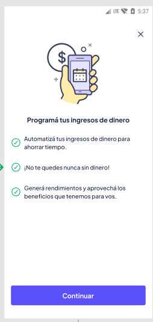
1. Beneficio
1. Benefit
La primera vez, un modal explica el beneficio: automatizar ingresos, no quedarse sin saldo y aprovechar rendimientos.
The first time, a modal explains the benefit: automating top-ups, never running out of balance, and earning yield.
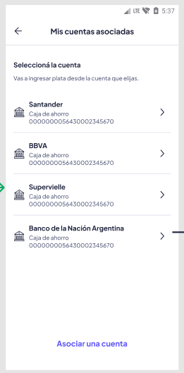
2. Cuenta de origen
2. Source account
Con 2+ cuentas asociadas (Caso 3), el usuario elige desde cuál quiere programar el ingreso.
With 2+ linked accounts (Case 3), the user picks which one to schedule the top-up from.
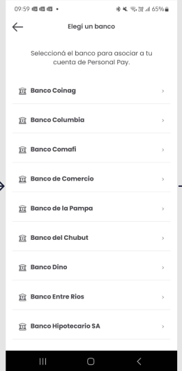
3. Asociar cuenta
3. Link an account
Sin cuentas asociadas (Caso 1), primero elige su banco para vincular una cuenta.
With no linked accounts (Case 1), the user first picks their bank to link an account.
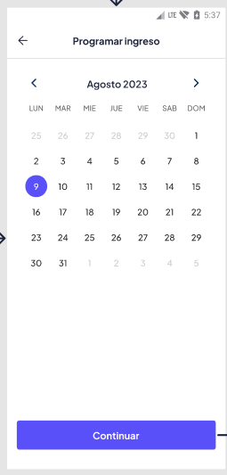
4. Fecha
4. Date
Elige la fecha en la que quiere que se acredite el dinero, antes del vencimiento del servicio.
The user picks the date they want the money credited, ahead of the bill's due date.
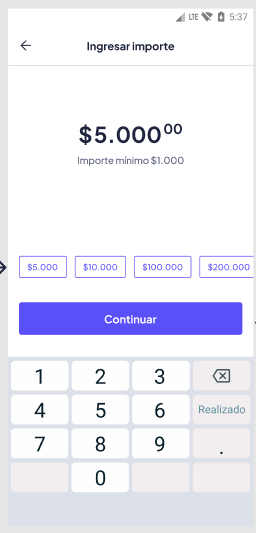
5. Monto
5. Amount
Define el monto a ingresar, con accesos rápidos a los montos más usados.
The user sets the amount to top up, with shortcuts to the most common amounts.
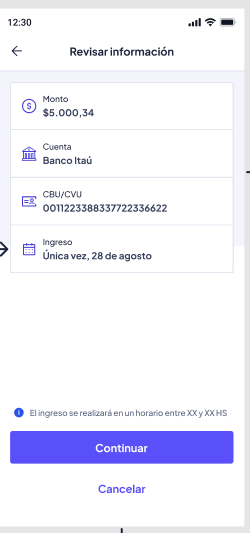
6. Revisión
6. Review
Revisa el monto, la cuenta de origen y la fecha antes de confirmar la programación.
The user reviews the amount, source account, and date before confirming the schedule.
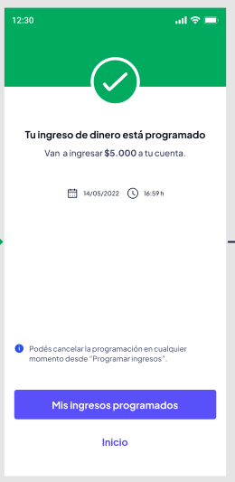
7. Confirmación
7. Confirmation
El ingreso queda programado, con la fecha y hora estimadas de acreditación.
The top-up is scheduled, with the estimated date and time it will be credited.
GESTIÓN
MANAGEMENT
Programar un ingreso no es un compromiso fijo: el usuario puede ver el detalle y cancelar la programación en cualquier momento, hasta 24 horas antes de la fecha elegida.
Scheduling a top-up isn't a fixed commitment: the user can view the details and cancel the schedule at any time, up to 24 hours before the chosen date.
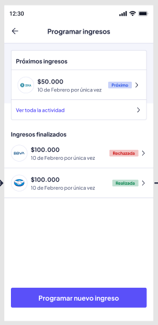
Listado
List
"Próximos ingresos" pendientes e "Ingresos finalizados", con su estado (realizado, rechazado).
Pending "upcoming top-ups" and "completed top-ups," with their status (completed, rejected).
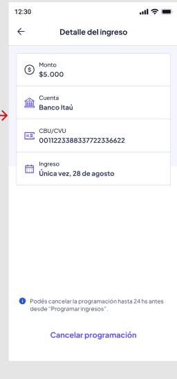
Detalle
Detail
Monto, cuenta y fecha del ingreso, con la opción de cancelar la programación hasta 24 horas antes.
Amount, account, and date of the top-up, with the option to cancel the schedule up to 24 hours in advance.
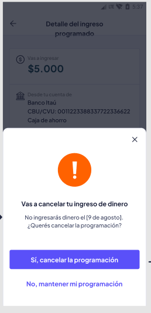
Confirmar cancelación
Confirm cancellation
Antes de cancelar, se le confirma al usuario qué va a dejar de ingresar y para cuándo estaba programado.
Before canceling, the user is shown exactly what won't be credited and when it was scheduled for.
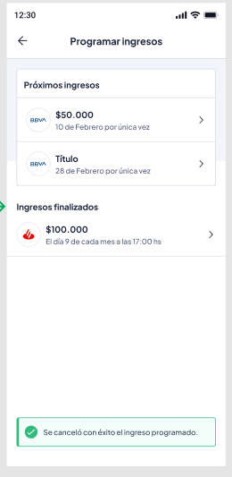
Cancelación exitosa
Successful cancellation
Confirmación clara de que la programación se canceló, visible directamente en el listado.
Clear confirmation that the schedule was canceled, visible directly in the list.
ESTADOS CRÍTICOS
CRITICAL STATES
Los estados vacíos y de error necesitaban ser tan claros como el flujo principal, para que el usuario siempre supiera qué pasó y qué podía hacer a continuación.
Empty and error states needed to be just as clear as the main flow, so the user always knew what happened and what they could do next.
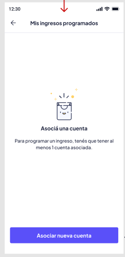
Sin cuentas asociadas
No linked accounts
Invita a asociar una cuenta antes de poder programar nada (Caso 1).
Prompts the user to link an account before scheduling anything (Case 1).
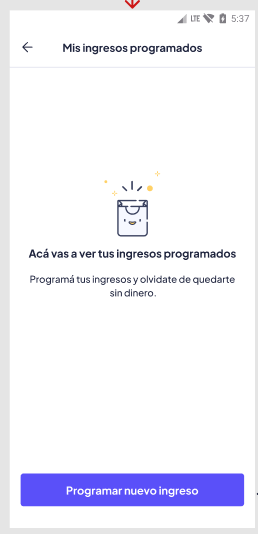
Sin ingresos programados
No scheduled top-ups
Primera vez que el usuario entra a la sección, todavía sin historial.
The first time the user opens the section, with no history yet.
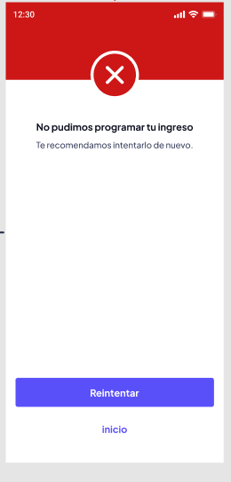
Error al programar
Scheduling error
Si algo falla, se le pide al usuario reintentar sin perder los datos que ya cargó.
If something fails, the user is asked to retry without losing the data they already entered.
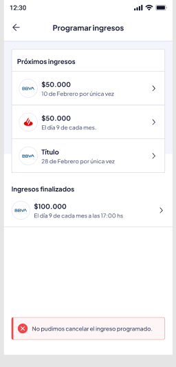
Error al cancelar
Cancellation error
Si la cancelación falla, el ingreso programado se mantiene sin cambios y se informa el error.
If the cancellation fails, the scheduled top-up stays unchanged and the error is clearly reported.
IMPACTO
IMPACT
El feature está en producción. No contamos con métricas exhaustivas de adopción, pero el equipo identificó una reducción aproximada del 10% en la mora de servicios asociados a débito automático desde su lanzamiento. La fricción que buscaba resolver —tener que reintentar manualmente un pago rechazado por falta de saldo— era real, aunque no estuviera cuantificada con precisión antes de encarar el diseño.
The feature is in production. We don't have exhaustive adoption metrics, but the team identified an approximate 10% reduction in late payments on services tied to automatic debit since launch. The friction it aimed to solve — having to manually retry a payment rejected for insufficient balance — was real, even if it wasn't precisely quantified before the design work started.
El disparador: una notificación push
The trigger: a push notification
Para que el usuario adoptara el hábito sin esfuerzo extra, el punto de entrada principal al flujo es una notificación push que avisa el vencimiento próximo de un servicio y ofrece programar el fondeo en ese mismo momento, sin que el usuario tenga que buscar la función de forma proactiva.
For the user to adopt the habit without extra effort, the main entry point to the flow is a push notification that flags an upcoming bill due date and offers to schedule the top-up right then, without the user having to proactively look for the feature.
APRENDIZAJES
LEARNINGS
La notificación push que dispara el flujo en el momento justo, antes del vencimiento, fue tan importante como el flujo de programación en sí. Sin ese gatillo, la función existía pero nadie la encontraba.
The push notification that triggers the flow at exactly the right moment, before the due date, was as important as the scheduling flow itself. Without that trigger, the feature existed but no one found it.
Diseñar para 0, 1 y 2+ cuentas asociadas triplicó la cantidad de estados a resolver, pero simplificó la experiencia para cada usuario: nadie ve un paso que no le aplica.
Designing for 0, 1, and 2+ linked accounts tripled the number of states to solve for, but simplified the experience for each individual user: no one sees a step that doesn't apply to them.
Cada débito rechazado no solo afectaba al usuario: implicaba que tuviera que volver a intentar el pago por su cuenta. Resolver el problema de forma proactiva, antes de que pasara, le ahorró ese esfuerzo repetido al usuario.
Every rejected debit didn't just affect the user in the moment — it meant they had to go back and retry the payment themselves. Solving the problem proactively, before it happened, saved users that repeated effort.